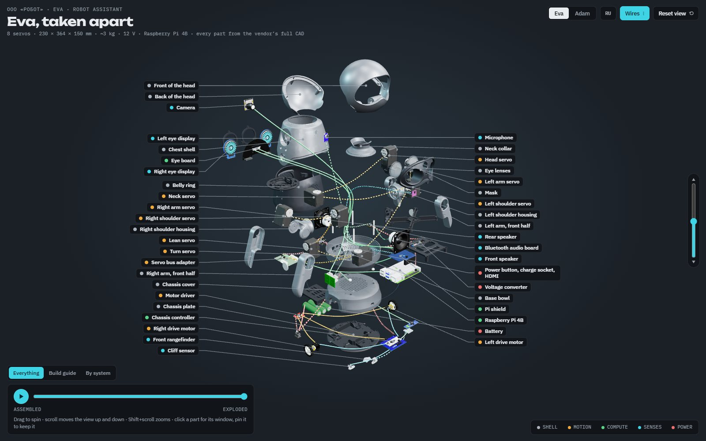
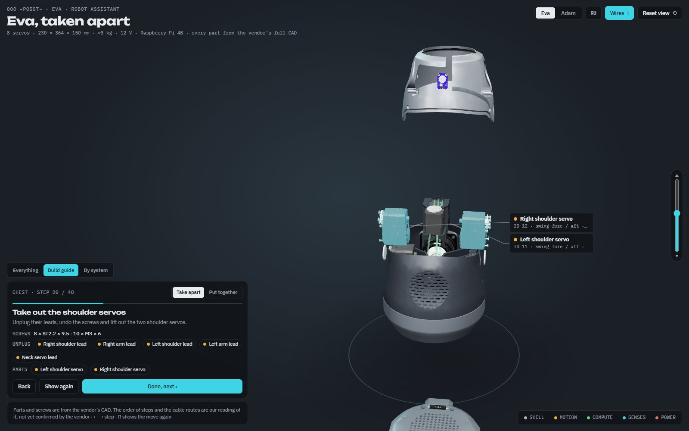
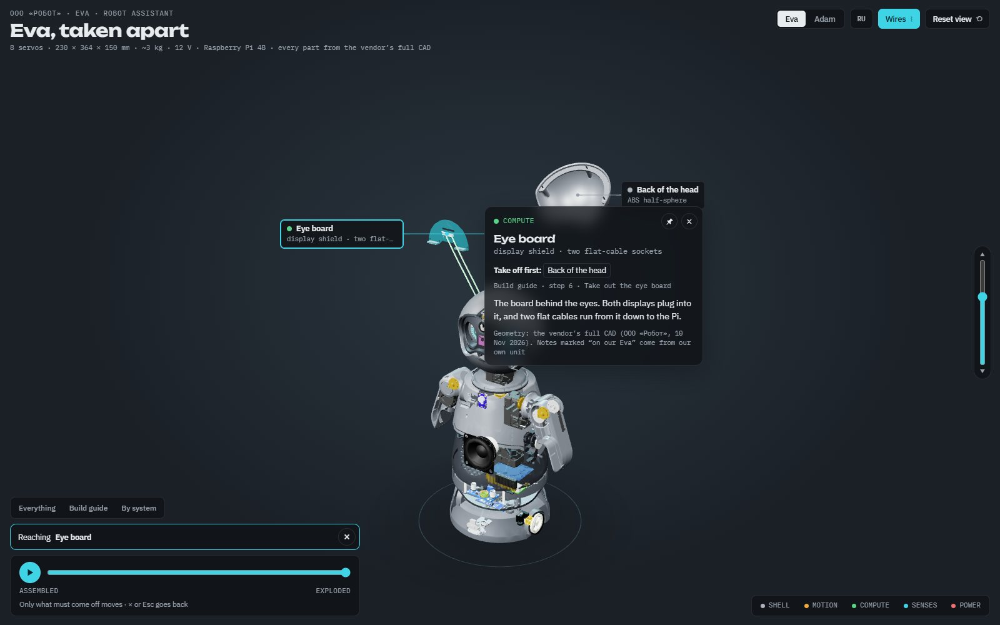
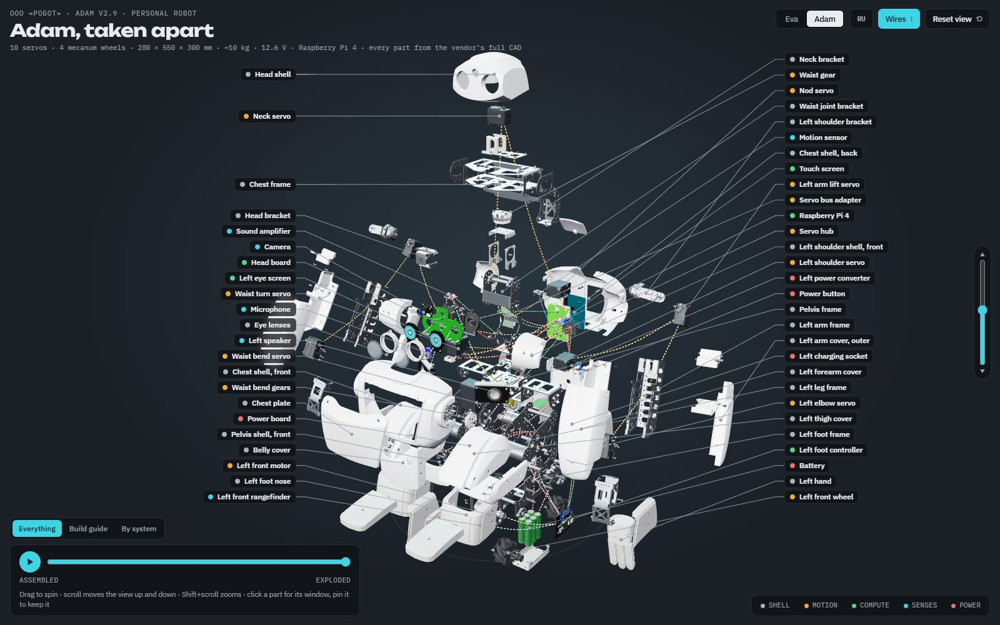
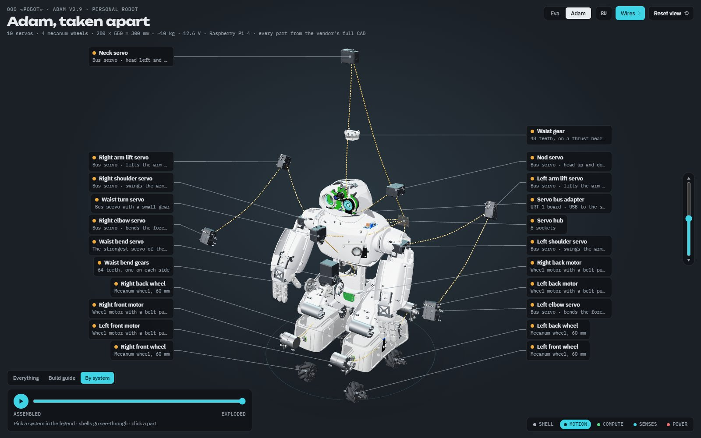

Robots · Tools In progress
Eva and Adam, taken apart

Two humanoid robots live in our workshop. We write the software that makes one of them see, listen and pull faces, and we built a 3D guide that takes both of them apart screw by screw.
Eva is a desk-sized robot assistant: eight servos, two round screens for eyes, a camera between them and a Raspberry Pi where a person would keep their lunch. Adam is her big brother, ten kilos on four mecanum wheels. Both are built by the robotics company ROBOT. What we add is software, and a habit of asking what a game studio can do with a body.
The exploded view
The page loads the maker's own CAD, every part a real piece of geometry, and lets you pull the robot apart with a slider. Parts leave layer by layer, outer shells first, and each wire is drawn in the colour of what it carries: power, data, the servo bus, sensors, motors.
It has four ways of looking. Everything is the slider. Build guide walks a student through taking the robot apart or putting it together, one step at a time, with the screws to undo and the cables to unplug. By system pulls out only the motion, the senses, the power or the brain. Reach a part answers the question you actually have with a screwdriver in your hand: what do I need to take off to get to this?
What Eva does
- She listens for her name, answers in a voice, and her replies carry a mood that moves her eyes and her body.
- Her eyes are animations we generate: lizard, alien and the classic ring of LEDs, nineteen named reactions each, plus a crazy pack with a radar, a fire and Pac-Man.
- She sees: faces she knows, and what is in front of her.
- She can be driven by an AI assistant over MCP, the same way an assistant uses any other tool. Everything runs on the robot itself. Nothing of Eva lives on a laptop.
What we are honest about
The parts and the screws come from the maker's CAD. The order of the steps and the route of every cable are our reading: the CAD has no wiring harness in it, so we drew the cables by hand, and for Eva we checked them against the robot on our desk. Fourteen of her thirty-seven wires are confirmed; the rest are drawn dashed. Adam we have never opened. His manual says not to without the maker's consent, so his guide is a study, not an instruction.
The viewer itself is not public yet. We would like to open it once the maker has checked the steps.
Pictures












Talk about this one
Questions, ideas, “you should try this instead”: the thread for this experiment is open to anyone.
The forum runs on GitHub Discussions. Reading is open to all; posting needs a free GitHub account.
More experiments
 Art direction
One wheel, four tables
In Souls & Estates one mouse wheel now takes you from a single peasant yard to a table map of central Russia, through four dioramas of the same place.
You can try it
Art direction
One wheel, four tables
In Souls & Estates one mouse wheel now takes you from a single peasant yard to a table map of central Russia, through four dioramas of the same place.
You can try it
 New platform
A game inside a Reddit post
What if you did not have to leave the feed to play? We put Gull Chorus, our seagull flock game, inside a Reddit post: one post is one beach, with a leaderboard under it.
In progress
New platform
A game inside a Reddit post
What if you did not have to leave the feed to play? We put Gull Chorus, our seagull flock game, inside a Reddit post: one post is one beach, with a leaderboard under it.
In progress
 Robots · Tools
Rewiring Eva: a full software review
We took the software of a humanoid robot apart, reviewed every piece and rebuilt it as six small programs that each own one part of her. Then we gave her a new brain.
In progress
Robots · Tools
Rewiring Eva: a full software review
We took the software of a humanoid robot apart, reviewed every piece and rebuilt it as six small programs that each own one part of her. Then we gave her a new brain.
In progress